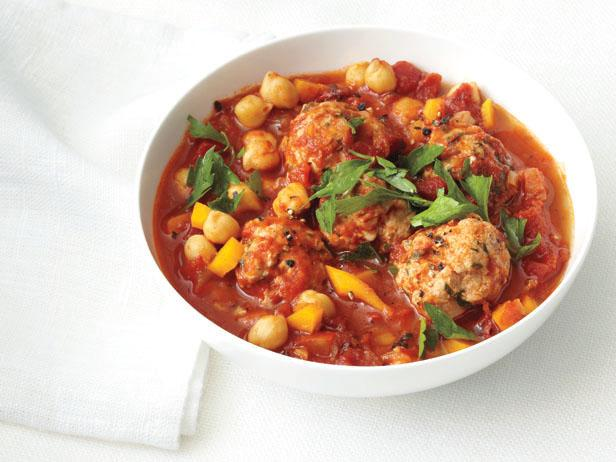

Turkey Meatball Stew

A one-pot comfort food stew with a rich, savory broth, and loaded with fresh veggies and tender turkey meatballs.
In just an hour, on the stove-top, in one pan, this Turkey Meatball Stew is cooked to perfection. It’s an ideal, scrumptious comfort food dinner for the cooler months.
Ingredients
- 2 pounds ground turkey
- 1 large egg
- 2 teaspoons smoked paprika
- 1 teaspoon onion powder
- 1 teaspoon garlic powder
- 2 1/2 teaspoons dried thyme, divided
- 1 1/2 teaspoons salt
- freshly ground black pepper
- olive oil for the pan
- 1 1/2 cups red onion, thinly sliced
- 1 tablespoon garlic, minced
- 2 cups Yukon Gold potatoes, washed and dried, cut into bite-sized pieces
- 1 1/2 cups carrots, peeled, cut into bite-sized pieces
- 1 (28-ounce) can tomato purée
- 1 cup peas, frozen and thawed
- 1 cup loosely packed basil leaves, washed and dried, roughly chopped
Instructions
- Combine the ground turkey with the egg, paprika, oregano, garlic powder, onion powder, 1 teaspoon on the dried thyme, salt and a pinch or two of pepper. Mix only until combined. Cover with plastic wrap and set aside.
- Coat the bottom of a very large sauté pan with olive oil and place it over medium heat. Add the onions and garlic and cook until the onions are soft and beginning to caramelize, about 7 minutes. Add the remaining 1½ teaspoons of dried thyme and stir to blend.
- Turn the heat to the lowest setting and add the potatoes and carrots. Cover the pan with a fitted lid or foil to let them steam until they're tender, about 15 minutes. (Open the lid and stir from time to time to be sure they aren't getting too brown or burning on the bottom.)
- Add the tomato purée to the pan with the vegetables. Bring to a boil, then immediately turn the heat to low and let it simmer for about 5 minutes.
- Season the sauce to taste with salt and pepper. (Here's How to Season to Taste.)
- Keeping the heat low, shape the turkey mixture into approximately ¼ cup-sized meatballs, gently adding them to the pan as you go. (Clear an area for each one, by moving the sauce around a bit.) Cover the pan until they are cooked through, about 16 minutes. They should be turned over gently midway through the cooking time.
- Gently mix in the peas and basil.
- Serve!